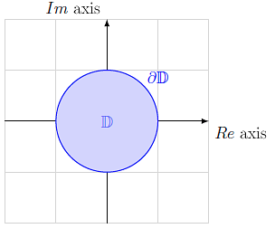

This post is just to motivate the definition of a compact set. There are plenty of books and resources to learn this definition, but I wanted to give an introduction based on my way of understanding compactness. The basic idea behind a compact set is that it's "finite, in some sense".
Consider the unit disk 𝔻, in the complex plane, including it's boundary points ∂𝔻:

𝔻 U ∂𝔻 (unit disk)
Define the set X = 𝔻 U ∂𝔻, now, when thinking about X is just a set, it's not finite, it's actually a larger size of infinity than the integers (see this post on transfinite numbers). But as a topological space, it has a finiteness to it. It's finite in area, but not all topological spaces have a notion of distance and area. There's a topological sense in which it's finite. That comes from the idea of a cover.
Definition of an open cover
Let \( (X, \tau) \) be the topological space of this unit disk. The elements of \( \tau \) are open sets. A cover of \(X\) is a collection \( \{ U_\alpha \}_\alpha \) of open sets \( U_\alpha \) whose union contains \( X \).
Informally, a cover is a bunch of sets that can be unioned together to contain the space in question. A set is compact if every cover has a finite subcover. And this time, the finiteness is of the set itself.
The motivation: why define a cover?
The whole reason topological spaces were defined was to describe the essence of continuous functions without depending on the heavy machinery of the real numbers and of metric spaces.
Covers are used to define compactness, which is a "nice" property. If a space \( X \) is compact, then any continuous function \( f : X \to Y \) has the property that the image \( f(X) \subseteq Y \) is also compact. There's more, but I wanted to highlight an interesting balancing problem in topology:
$$ f : X \to Y$$
You want the topology on \(X\) to have enough open sets so that \( f \) is continuous, but few enough so that \(X \) is compact. This tension is at the heart of a lot of practical applications of topology. Compactness and continuity are nice, and need to go together, but they pull in opposite directions when thinking about the cardinality of topologies of \(X\) and \(Y\).
So that's compactness. Every cover has a finite subcover.